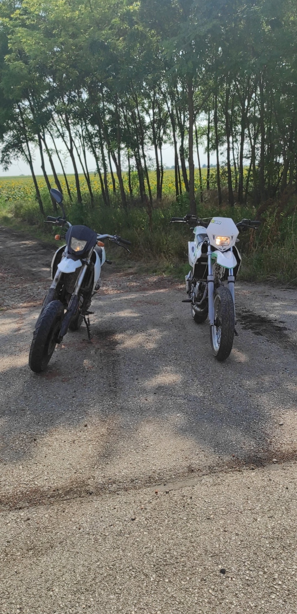
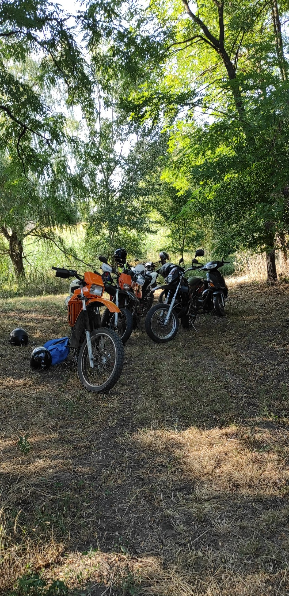

|

|
Ezen az oldalon azt mesélem el hogyan is tetszett meg úgy a motorozás, hogy akár az életemet is
adjam érte.
Igaz, sokan
mondják, hogy az 50 köbcentis motorok nem is igazi motorok, de szerintem minden pénzt meg ér az az
élmény, amikor a
barátaimmal csak megyünk és megyünk.
Volt, hogy egy nap alatt 170 kilómétert is levezettünk.
Az őszintét megvallva, először nem igazán jártam el otthonról sehova, még motorozni se igazán, de ez
egy idő után valahogy megváltozott és aztán már nem volt megállás. Bátran mondhatom végülis, hogy a
baráti társaságomnak köszönhetően szerettem meg ennyire a motorokat. egy csomó benzint elégettünk a
barátaimmal, de egy csöppet sem bánom.
(Körülbelül 50.000 forintot költöttem benzinre
Ezen a nyáron nagyon beleszerettem a motorokba. Az összes féle-fajta motor érdekel engem,
szeretem hallani a
hangjukat, szeretem látni ahogyan kinéznek.
A
nyáron átértékeltem,
hogy mit is jelent motoron ülni. Elég egy pillanat, és ha nem vigyázol akár az életedbe is kerülhet.
Ezt nagyon
megtanultam, mivel volt már párszor halálközeli élményem motorozás közben, viszont ez nem
változtatott semmin. Ugyan úgy megyek tovább.
Ezen a nyáron nagyon beleszerettem a motorokba. Az összes féle-fajta motor érdekel engem, szeretem
hallani a
hangjukat, szeretem látni ahogyan kinéznek.
Igaz az a mondás, hogy..
"Motoron 5 perc alatt többet élsz át mint más ember egész életében"
|

|